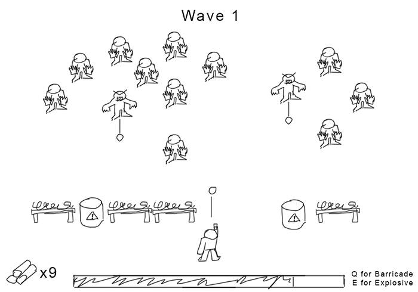
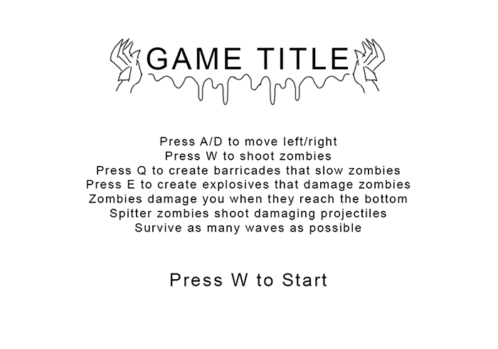

High Concept
It's based on space invaders, but themed around a zombie invasion on the player's defenses. The player must balance attacking zombies and establishing more defenses to survive as long as possible.
Genre
It could be classified as an arcade style game, specifically with shooting elements.
Platform
It will be only be designed to function on desktop. This is because adapting the screen and play space to fit on a phone might impact the gameplay too much.
Story
The premise is that the player is defending themselves and their base from an invading zombie horde. It will attempt to invoke feelings of action and horror while leaning into the simplicity of the aesthetic style to keep it casual. The player's motivation will be to attain a high score on the number of waves they survive.
Aesthetics
The game will have a simple aesthetic with monotone black and white pixel art accentuated with occasional splashes of red. This will hopefully make it quick to produce and easy to read for the player.
Sound will have an 8-bit feel, but not strictly adhere to actual 8-bit limitations. There will need to be audio clips for starting the game, shooting, creating new defenses, and the game ending. These sounds could be more akin to convential 8-bit. Sounds such as zombies groaning or the player being damaged could use heavily bitcrushed audio samples. Music may also require this technique.
Gameplay
Mechanics
- The player can move left/right and shoot directly upwards, similar to space invaders.
- Zombies continually spawn from the top of the screen in waves.
- Zombies can be shot to kill them.
- The player has health. When a zombie reaches the bottom of the screen, it deals damage. When health reaches zero, the game ends.
- The player can build barriers in front of them, which slow zombies by forcing them to attack it first.
- The player can build explosives that kill zombies in a radius when they reach it.
- Building requires resources obtained by killing zombies.
- Some zombies shoot projectiles that can damage the player.
Control
It will only require a keyboard to play.
Onboarding
While the arcade nature of the game provides few onboarding options, something that could work is to make the player start the game by pressing the same button used to shoot. Thus, the game immediately begins as a shot is being fired into a lone zombie. This teaches the player how to shoot if they don't bother to read the instructions on the title screen.
Player Learning
The game begins with relatively few zombies and increaes in intensity over time. This gives the player a chance to learn before pressure is increased. The more they play the game, the better the player will become at intuiting when it is best to prioritize shooting over defensive construction.
Mockups
 Development Process
Because this project was started without a precusor assignment to learn PixiJS, much of the development time was spent figuring out how to use the library. I began by creating the HTML page on which the game would be hosted. Then, I split the program into a state machine using different Javascript files. While this is worse for load times, it is much more convenient for human readability. Then, I programmed each state as needed. Partway through, I ended up needing to manually download the bundled PixiJS libraries since the PixiJS Filters library was broken on the CDN version. Ultimately, this meets project requirements by providing a user-friendly, interactive experience which features sound, graphics, ES6 classes, moderate responsiveness, and clean code conventions.
Resources Used
- Lexend Deca Font
- Chiptune Sound Generator
- TTS Voice
- "Blipotron" Kevin MacLeod (incompetech.com)
Licensed under Creative Commons: By Attribution 4.0 License
http://creativecommons.org/licenses/by/4.0/ - "Rhinoceros" Kevin MacLeod (incompetech.com)
Licensed under Creative Commons: By Attribution 4.0 License
http://creativecommons.org/licenses/by/4.0/